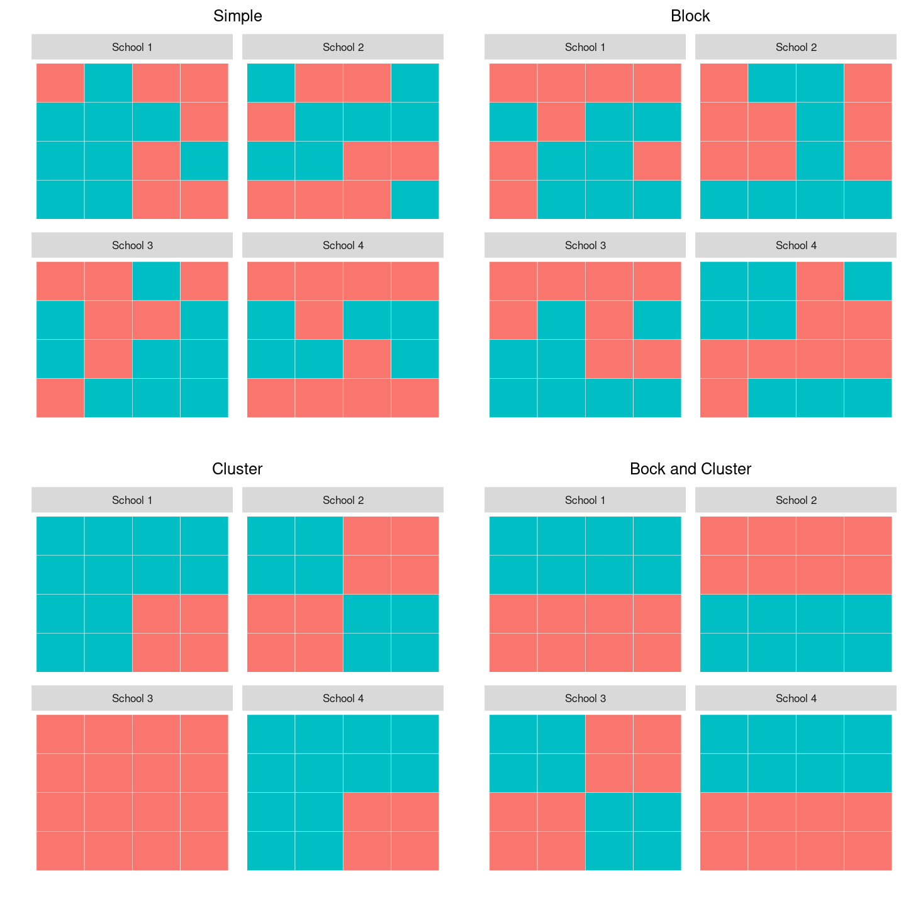

library(randomizr)
set.seed(343)
complete_ra(100, 34)10 Things You Need to Know About Randomization
Abstract
This guide will help you design and execute different types of randomization in your experiments. We focus on the big ideas and provide examples and tools that you can use in R. For why to do randomization see this methods guide.
1 Some ways are better than others
There are many ways to randomize. The simplest is to flip a coin each time you want to determine whether a given subject gets treatment or not. This ensures that each subject has a .5 probability of receiving the treatment and a .5 probability of not receiving it. Done this way, whether one subject receives the treatment in no way affects whether the next subject receives the treatment, every subject has an equal chance of getting the treatment, and the treatment will be independent from all confounding factors — at least in expectation.
This is not a bad approach but it has shortcomings. First, using this method, you cannot know in advance how many units will be in treatment and how many in control. If you want to know this, you need some way to do selections so that the different draws are not statistically independent from each other (like drawing names from a hat). Second, you may want to assert control over the exact share of units assigned to treatment and control. That’s hard to do with a coin. Third, you might want to be able to replicate your randomization to show that there was no funny business. That’s hard to do with coins and hats. Finally, as we show below, there are all sorts of ways to do randomization to improve power and ensure balance in various ways that are very hard to achieve using coins and hats.
Fortunately though, flexible replicable randomization is very easy to do with freely available software. The following simple R code can, for example, be used to generate a random assignment, specifying the number of units to be treated. Here, N (100) is the number of units you have and m (34) is the number you want to treat. The “seed” makes it possible to replicate the same draw each time you run the code (or you can change the seed for a different draw).1 2
2 Block randomization: You can ensure that treatment and control groups are balanced
It is possible, when randomizing, to specify the balance of particular factors you care about between treatment and control groups, even though it is not possible to specify which particular units are selected for either group.
For example, you can specify that treatment and control groups contain equal ratios of men to women. In doing so, you avoid any randomization that might produce a distinctly male treatment group and a distinctly female control group, or vice-versa.
Why is this desirable? Not because our estimate of the average treatment effect would otherwise be biased, but because it could be really noisy. Suppose that a random assignment happened to generate a very male treatment group and a very female control group. We would observe a correlation between gender and treatment status. If we were to estimate a treatment effect, that treatment effect would still be unbiased because gender did not cause treatment status. However, it would be more difficult to reject the null hypothesis that it was not our treatment but gender that was producing the effect. In short, the imbalance produces a noisy estimate, which makes it more difficult for us to be confident in our estimates.
Block (sometimes called stratified) randomization helps us to rig our experiment so that our treatment and control groups are balanced along important dimensions but are still randomly assigned. Essentially, this type of randomization design constructs multiple mini-experiments: for example, it might take women and randomly assign half to treatment and half to control, and then it would assign half of men to treatment and half to control. This guarantees a gender balance when treatment and control groups are pooled.
Another advantage of block randomization is that it ensures that we will be able to estimate treatment effects for subgroups of interest. For example, imagine that we are interested in estimating the effect of the treatment among women. If we do not block on gender, we may, by chance, end up with a random assignment that puts only few women into the treatment group. Our estimate of the treatment effect among women would then be very noisy. However, if we assign treatment separately among women and among men, we can ensure that we will have enough women in, respectively, the treatment and control group to obtain a precise estimate among this subgroup.
The blockTools package is a useful package for conducting block randomization. Let’s start by generating a fake data set for 60 subjects, 36 of whom are male and 24 of whom are female.
Suppose we would like to block on gender. Based on our data, blockTools will generate the smallest possible blocks, each a grouping of two units with the same gender, one of which will be assigned to treatment, and one to control.
rm(list = ls())
library(blockTools)
library(dplyr)
library(randomizr)
dat <-
tibble(
id = seq(1:60),
female = c(rep(0, 36), rep(1, 24)),
age = sample(18:65, size = 60, replace = TRUE)
)
# one covariate block
dat <-
dat %>%
mutate(Z_block_1 = block_ra(female))
with(dat, table(female, Z_block_1))
# matched quartets
out <- block(dat, n.tr = 4, id.vars = "id",
block.vars = c("female", "age"))
dat <-
dat %>%
mutate(
block_id = createBlockIDs(out, dat, id.var = "id"),
Z_block_2 = block_ra(block_id))
with(dat, table(Z_block_2, block_id))You can check the mean of the variable on which you blocked for treatment and control to see that treatment and control groups are in fact perfectly balanced on gender.
3 Factorial designs: You can randomize multiple treatments at the same time without using up power
Suppose there are multiple components of a treatment that you want to test. For example, you may want to evaluate the impact of a microfinance program. Two specific treatments might be lending money to women and providing them with training. A factorial design looks at all possible combinations of these treatments: (1) Loans, (2) Training, (3) Loans + Training, and (4) Control. Subjects are then randomly assigned to one of these four conditions.

Factorial designs are especially useful when evaluating interventions that include a package of treatments. As in the example above, many development interventions come with several arms, and it is sometimes difficult to tell which arms are producing the observed effect. A factorial design separates out these different treatments and also allows us to see the interaction between them.
The following code shows you how to randomize for a factorial design.
dat <-
tibble(
Z_loan = complete_ra(80, 40),
Z_training = block_ra(blocks = Z_loan)
)
with(dat, table(Z_loan, Z_training))4 You can randomize whole clusters together (but the bigger your clusters, the weaker tends to be your power)
Sometimes it is impossible to randomize at the level of the individual. For example, a radio appeal to get individuals to a polling station must inherently be broadcast to a whole media market; it is impossible to broadcast just to some individuals but not others. Whether it is by necessity or by choice, sometimes you will randomize clusters instead of individuals.
The disadvantage of cluster randomization is that it reduces your power, since the number of randomly assigned units now reflects the number of clusters and not simply your total number of subjects. If your sample consisted of two clusters of 1,000 individuals each, the functional number of units might be closer to 2, not 2,000. For this reason, it is preferable to make clusters as small as possible.
The degree to which clustering reduces your power depends on the extent to which units in the same cluster resemble each other. It is desirable to have heterogeneity within your clusters so that they are as representative as possible of your broader population. If the individuals within clusters are very similar to each other, they may have similar potential outcomes, which means that groups of individuals with similar potential outcomes will all be assigned to treatment or control together. If a cluster has particularly high or low potential outcomes, this assignment procedure will increase the overall correlation between potential outcomes and treatment assignment. As a result, your estimates become more variable. In brief, if your clusters are more representative of the broader population, your estimates of the average treatment effect will be more precise. See our guide on cluster random assignment for more details.
A frequently asked question is how cluster randomization differs from block randomization. Block randomization is conducted in order to achieve balance based on pre-treatment covariates. For example, an education intervention might block randomize on the previous year’s test scores in order to track the progress of both low- and high-performing students. Cluster randomization is when multiple units are treated as a group–they all receive treatment or control status together. For example, the same education intervention might randomize at the level of the classroom, so the classrooms constitute the clusters. It is possible to block and cluster randomize simultaneously. In our example, you might calculate the average test score for each classroom and block randomize based on the classroom’s average score.
The following graphic demonstrates what your data might look like in the cases of block, cluster, and block + cluster randomization, relative to a simple case of randomization with no blocking or clustering. The example imagines that we conduct an experiment in four schools, where each school comprises four classrooms with four students in each classroom. The top left panel represents simple random assignment. Note that the number of students assigned to treatment (tiles shaded in blue) varies across schools. For example, in school 1, 9 students are assigned to treatment but in school 4, the treatment group comprises only 6 students. The top right panel represents a random assignment procedure that uses schools as blocks. This procedure ensures that exactly eight students are assigned to treatment in each school. The bottom left panel shows cluster random assignment. The idea is that the four students in each quadrant of a school are in the same classroom, and we assign entire classrooms to treatment. Note again that, because there is no blocking involved, the number of classrooms assigned to treatment varies across schools. For example, school 1 assigns three classrooms to treatment while school 3 assigns all classrooms to control. Finally, the bottom right panel corresponds to assignment that is both blocked by school and clustered by classroom. Blocking ensures that exactly two classrooms per school are assigned to treatment.

5 You can randomize in a way that makes it easier to see if there are spillovers
When designing your experiment, think critically about whether “spillovers” pose a threat to your ability to identify the causal effect of your treatment. Spillovers arise if one units outcome is affected by the treatment status of another unit. This can be tricky if units have the ability to interact with each other: one member of a village may learn of another villager’s receipt of a cash grant and may change their behavior accordingly.
One way to make spillovers more evident is to use double randomization. You would first randomly assign some clusters to treatment and others to control, and within clusters, you would assign some individuals to treatment and others to control. Comparing control individuals in your treatment cluster to individuals in your control cluster will enable you to assess the role of spillovers in your experiment.
6 Different units can be assigned to treatment with different probabilities
Sometimes people think that “random” means that two events are equally likely, but in fact, random assignment is “random” so long as the probability of assignment to treatment is strictly between 0 and 1. If a subject has a 0 or a 100 percent chance of being assigned to treatment, that subject should be excluded from your experimental analysis because there is no randomization occurring. However, all subjects with a probability of assignment to treatment strictly between 0 and 1 may be included, even if their probabilities differ, so long as their probabilities are known.
Why might you want to assign different probabilities of assignment to treatment? Suppose you are working with an implementing partner to randomize the allocation of election observers in order to measure the effect on electoral fraud. Your implementing partner can afford to send only a few election observers to a rural part of the country. You could address this constraint by blocking on geographic area and assigning a higher probability of assignment to treatment to more proximate villages to which it is less costly to travel. So long as the probability of assignment to treatment for more accessible villages is less than 1, the probability of assignment to treatment for less accessible villages is greater than zero, and these probabilities are known, it is possible to estimate the effect of the treatment.
When subjects have differing probabilities of assignment to treatment, however, you can no longer simply merge all subjects in the analysis of your data. If you do, then treatment assignment will be correlated with background characteristics on which you blocked. There are two ways of handling this.
The first way is to estimate the average treatment effect block by block and then to average the treatment effects, each weighted by the size of the block relative to the entire sample.
The second way is inverse probability weighting (IPW). In IPW, weights are defined as the 1/p for treated units and 1/(1-p) for control units, where p refers to the probability of assignment to treatment. This method allows you to run a weighted regression of your outcome on treatment assignment.
N <- 100000
dat <- tibble(Y0 = 1:N,
Y1 = Y0 + 10000)
dat <-
dat %>%
mutate(
p = seq(0.25, 0.75, length.out = N),
Z = simple_ra(N, prob_unit = p),
Y = Z * Y1 + (1 - Z) * Y0)
dat %>%
summarise(
naive_estimate = mean(Y[Z == 1]) - mean(Y[Z == 0]),
ipw_estimate = weighted.mean(Y[Z == 1], 1 / p[Z == 1]) -
weighted.mean(Y[Z == 0], 1 / (1 - p[Z == 0]))
)7 Restricted randomization: If you don’t like what you get you can start over
Sometimes you might want to make sure that randomization does not produce particular types of pattern (for example, too many people who know each other all being in treatment). But the patterns you care about might be too hard to set up in advance. What you can do is take a random draw and then check whether the draw meets the criteria you care about. If it doesn’t, then draw again. Be warned, though, that if you do this, you create a couple of complications: (1) each unit will not necessarily be assigned to treatment with the same probability, (2) units may not be independently assigned to treatment. You need to take into account both of these facts in your analysis. You can do so by generating inverse probability weights as we did in point 6. Here, you will need to use the same restricted randomization code that you used to assign treatment to figure out how likely it is that each subject is assigned to treatment under these restrictions. You simply run the code a large number of times and calculate the proportion of times that a given unit is assigned to treatment across all repetitions. Next, you use the distribution of possible treatment assignments to implement randomization inference. These analyses are complex so proceed with caution.
8 Write randomization code that lets you simulate many possible randomizations
A benefit of using R code to randomize is that you can perform thousands of possible randomizations in seconds. Why is this beneficial?
- It can be useful as a way to check whether your randomization code worked. For example, if one or more subjects in your experiment never received treatment over 10,000 possible random assignments, then you would suspect a flaw in your randomization code.
- You can use re-randomization to calculate the exact probability of assignment to treatment for each individual in your experiment. This is especially helpful if your randomization code is more complex. Perhaps you employ both block and cluster randomization or a restricted randomization procedure, resulting probabilities of assignment to treatment that vary greatly across individuals in a large experiment. These probabilities would be difficult to calculate by hand, but an easy solution is to run your original randomization code many times and generate a variable representing each individual’s proportion of times they were assigned to treatment: this represents his or her individual probability of assignment to treatment. The inverse of this variable can then be used in a weighted regression when estimating the average treatment effect.
- Simulating possible randomizations is a design-based approach to calculating statistical significance. This approach, called randomization inference, generates an exact \(p\)-value by calculating possible average treatment effects that would be observed under hypothetical random assignments if in fact the treatment had no effect. The \(p\)-value is then the proportion of the estimated treatment effects that is at least as large in magnitude as the one that your experiment observed. Randomization inference avoids making distributional assumptions and instead uses the distribution of data observed in your experiment. This approach is preferable to standard calculations of statistical significance when the sampling distribution is not normal – a problem that is more likely to arise when your experimental sample is small and when your outcomes do not follow a normal distribution. For more information on randomization inference, including sample code, visit the 10 Things to Know About Randomization Inference Methods Guide.
9 You can randomize as you go along
In many experiments, you may not know the entirety of your sample at the beginning of the experiment; some subjects may join over time. This presents a complication when we want to use a simple blocking algorithm because the addition of subjects to our pool may change the composition of our blocks and therefore their probabilities of assignment to treatment.
To maintain the ability to block and therefore the ability to assert control over the balance between treatment and control groups, you can use covariates to calculate a new subject’s similarity to other previously assigned subjects and assign the new subject to the treatment condition with fewer similar units.3 4
10 Randomization can sometimes be an ethical way of assigning a treatment, but sometimes it isn’t
Randomization is the key ingredient for isolating the causal effect of a treatment from a research design perspective, but it is also important to consider the ethical implications of randomization as well. When we think about the long-term effects of an experiment, randomization enables us to test which programs are most effective so that resources can be directed to programs that make the most difference in the lives of future populations. In the short term, randomizing access to a program (as opposed to distributing based on arbitrary characteristics) can be a particularly ethical way of distributing scarce goods that cannot be extended to everyone.
However, sometimes, it is the neediest populations that need to be served by an intervention in an experiment. A randomized design that treats equal numbers of low-income and high-income participants with loans is letting resources flow to less rather than more needy individuals. If we believe there are beneficial effects of the loan, then this raises concerns about the ethics of allocating resources away from the neediest.5 One would need a strong case for social benefits of the research and would also seek designs that provide benefits ultimately to control groups.
A wait list randomization design is one way of treating an entire subject pool while enabling the researcher to test the effectiveness of the treatment experimentally. In this design, the program could roll out the intervention in phases and randomly assign the units to the phase in which they will be treated. For example, if a program wanted to treat 90 villages in total, it could treat 30 villages each year, and measure outcomes at the end of each year. If you wanted to compare outcomes in treatment and control villages, you would compare the 30 treated villages to the 60 yet-untreated villages at the end of the first year. At the end of the second year, you could compare the 30 villages that were treated in the previous year to the 30 villages that are yet-untreated. Essentially, this creates two experiments, identical but for the year’s time that separates them. In the table below, you can see that in the first year, we could compare the dark blue treatment group to the two light blue control groups. In the second year, we could compare the dark red treatment group to the light red treatment group, but we would want to avoid pooling the two treatment groups because one has been treated for longer than the other. You can see that after the third year, no more comparisons may be made because all units have been treated.

The only requirement is that a subject’s assignment to treatment in a particular phase is randomly assigned and unrelated to their potential outcomes of interest. A design in which more eager participants received treatment earlier would violate this assumption and would not yield an unbiased estimate of the treatment effect, as unobserved factors that predispose them to seeking out treatment may be influencing their schedule of potential outcomes. The wait list design is an example of a creative randomization design that could address ethical concerns about limiting the distribution of a valuable treatment.
Ethics are often highly intertwined with randomized designs, especially in social science and medical research. As a researcher, you should carefully consider the possible implications of randomizing any given treatment. You will also need to solicit approval for your research design from your research institution’s Institutional Review Board (IRB).
Footnotes
Random number generators are actually pseudo-random because they generate a vector of random numbers based on a small set of initial values, known as a seed state. Random number generators operate this way in order to improve computational speed. However, the series of random numbers generated is as random as you need to it to be for the purposes of random assignment because it is wholly unrelated to the potential outcomes of your subjects.↩︎
All code chunks updated by Alex Coppock on 25 November, 2020.↩︎
For more, see Moore, Ryan T., and Sally A. Moore. “Blocking for sequential political experiments.” Political Analysis 21.4 (2013): 507-523.↩︎
For a more detalied walkthrough on the randomization procedures available in the R package randomizr, see: https://declaredesign.org/r/randomizr/articles/randomizr_vignette.html↩︎
But if we are certain about the loan’s effects, then it’s also unclear why we are running an experiment to test it. In medical research, randomized controlled trials often stop if it becomes clear early on that a drug is undoubtedly curing life-threatening diseases, and therefore withholding it from control subjects is dangerous. (Similarly, a trial would also stop if it were clear early on that a drug is undoubtedly causing negative and harmful effects.)↩︎